|
VVV
- FC Den Bosch (1-0) 17 mei 2007
|
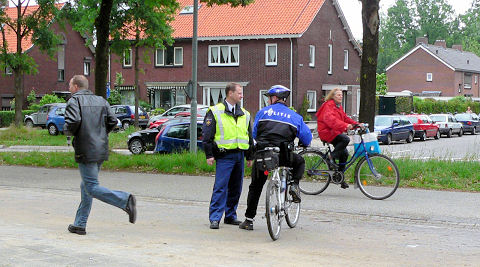
VVV ontvangt FC Den Bosch voor de beslissingswedstrijd wie naar de finale van de
play-offs gaat voor een plaats in de eredivisie.
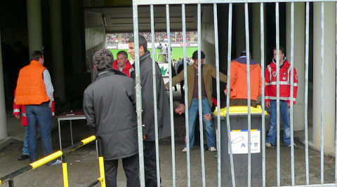
Vanwege eerdere ongeregeldheden is er een totaal
alcoholverbod ingesteld. Er wordt
scherp gecontroleerd en het fouilleren gebeurt nogal intensief.
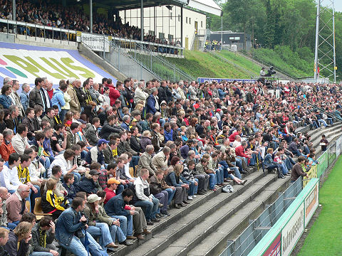
De uitverkochte "Koel", (6.000 toeschouwers).
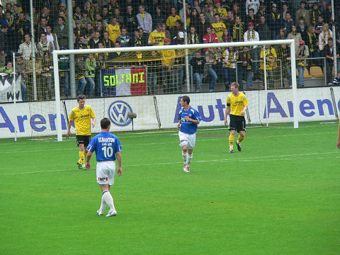
De eerste helft was van een bedroevend niveau.
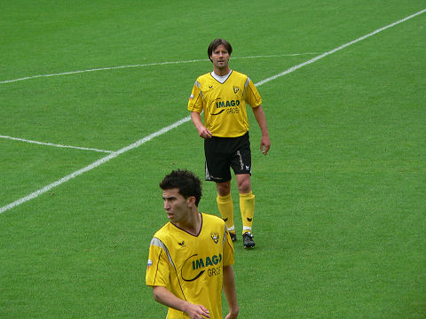
Clubtopscorer en oud-Rodaspeler Dirk Jan Derksen.
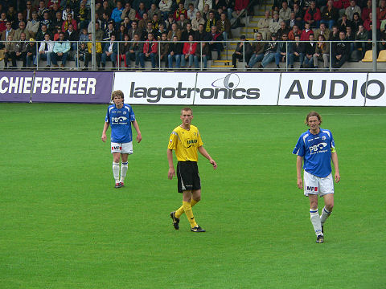
Willem Janssen, de middenvelder die naar Roda verkast.
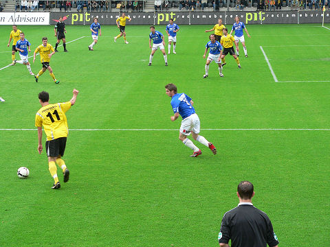
Een van de spaarzame momenten dat VVV voor het doel van Den Bosch komt.
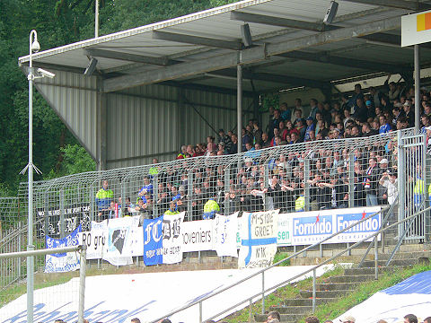
De Bosschenaren zorgen voor de sfeer in het verder doodstille stadion.
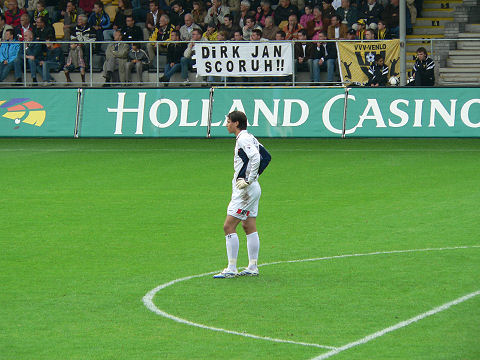
Doelman M‰enp‰‰ verveelt zich dood en staat meestentijds ver voor zijn doel.
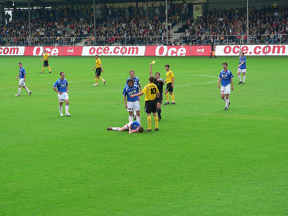
Scheidsrechter Haverkort trekt geel voor Janssen.
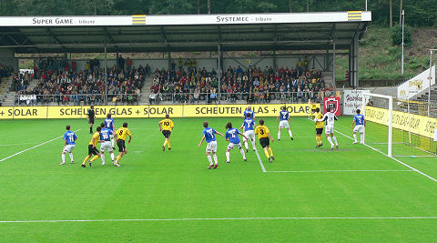
Frank van Kouwen, de verdediger met opbouwende kwaliteiten die net als Janssen
naar Roda gaat, neemt hier een hoekschop.
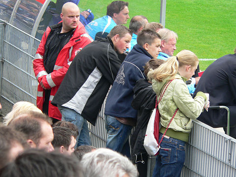
Opvallend is het grote aantal roodjassen dat voortdurend het publiek in de gaten
houdt en intensief surveilleert.
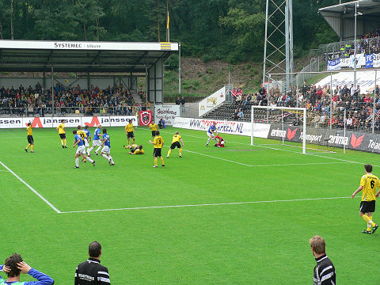
De tweede helft is veel aantrekkelijker. VVV is de stress voorbij en voetbalt
eindelijk.
Toch dreigt het hier fout te gaan....
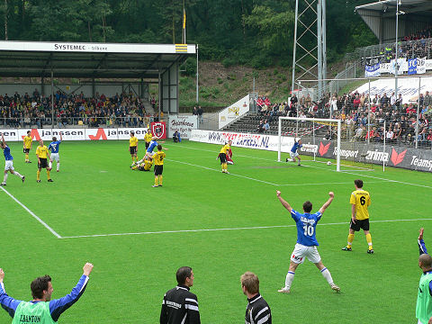
....als de bal tergend langzaam over de doellijn van VVV gaat. Haverkort keurt
de
goal (terecht) af wegens buitenspel.
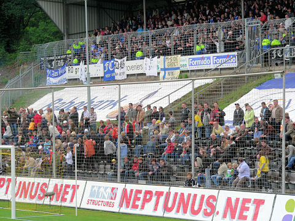
Er breken kortstondig onvriendelijkheden uit tussen beide supportersgroepen.
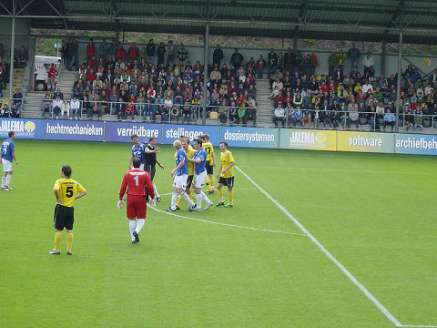
Haverkort wil niet aan een tweede gele kaart voor Demouge. Het zou betekenen dat
FC Den Bosch voor de derde keer op rij met tien spelers zou komen te staan.
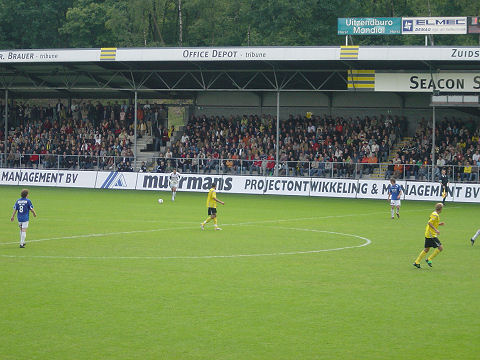
De doelman van Den Bosch rukt mee naar voren.
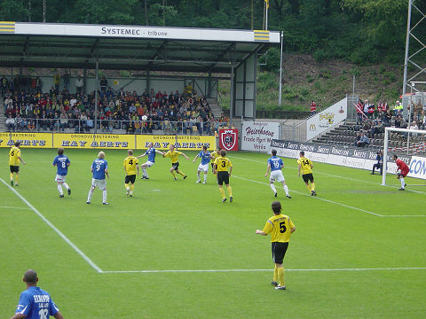
VVV is meest in balbezit en krijgt de beste kansen. Hier is Den Bosch echter
gevaarlijk. De man met rugnummer 4 is Van Kouwen.
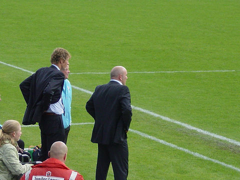
Trainer Theo Bos (FC DB) en zijn assistent staan gespannen langs de lijn.
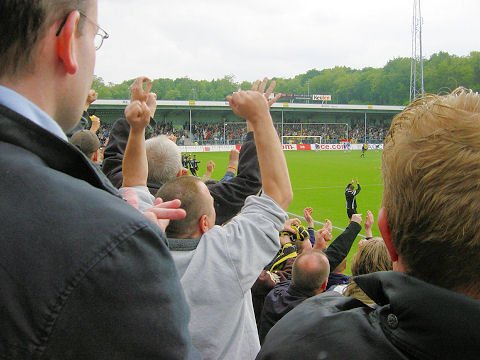
Soltani scoort 1-0, (80').
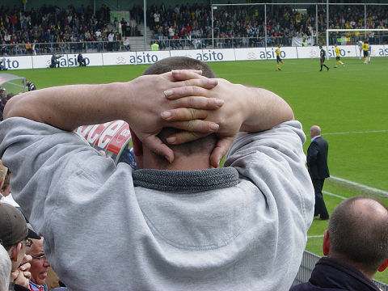
Even later verprutst VVV de kans op een beslissende 2-0.
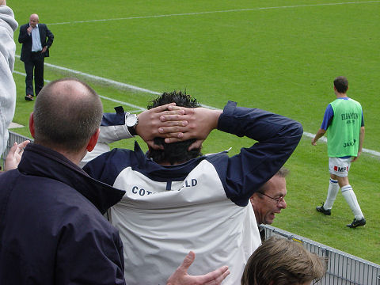
En dus blijft het spannend.
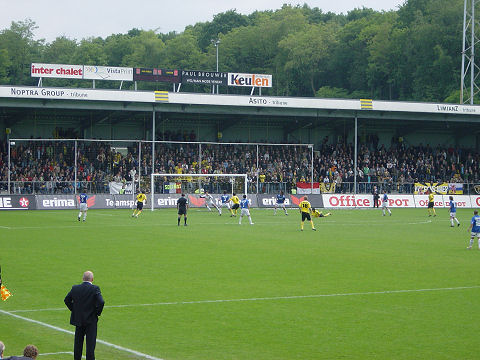
VVV belegert het doel van Den Bosch.
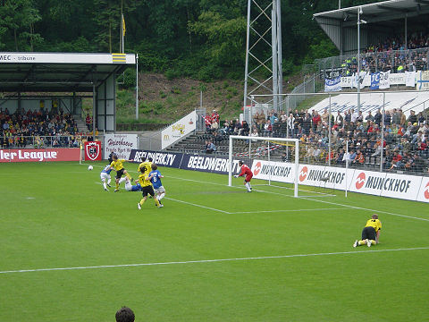
De counters van FCDB zijn levensgevaarlijk.
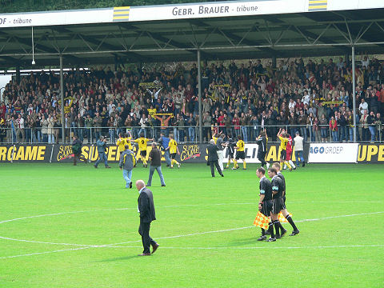
VVV overleeft de 4 minuten extra tijd en begint aan de zege-tocht.
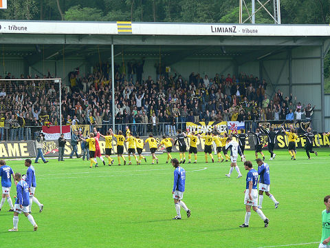
In Venlo geen "hinsetzen" maar....
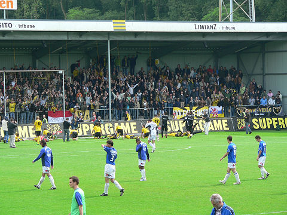
....maar "hinliegen".
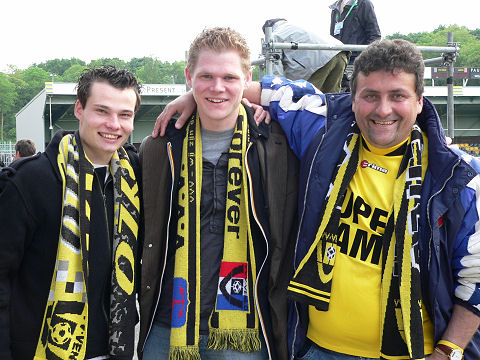
Jeugdige VVV-supporters met een trainer die al 25 jaar
diverse
amateurclubs uit
Venlo e.o. onder zijn hoede heeft gehad: Giovanni Venezia.
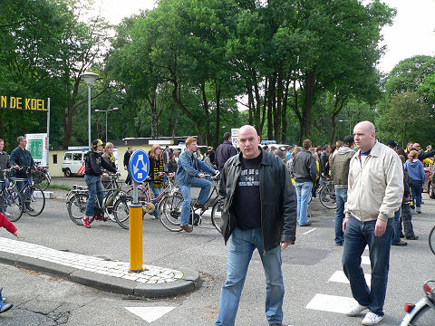
Niet alleen vanwege eerder onverkwikkelijkheden buiten het stadion maar ook
vanwege de koopzondag (Hemelvaart) in Venlo is er een enorme politie-inzet om
nieuwe escalaties te voorkomen. De twee vriendelijke Bosschenaren op de
voorgrond
zijn overigens normale supporters.
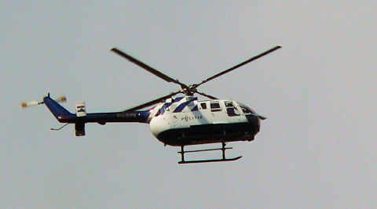
Het mag wat kosten in Venlo.
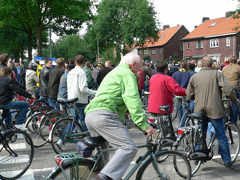
In de finale stoot VVV op RKC. Zal de Waalwijkse plaaggeest van Roda JC ook een
maatje te groot zijn voor VVV?
©
Koempels Pleasure Dome
|